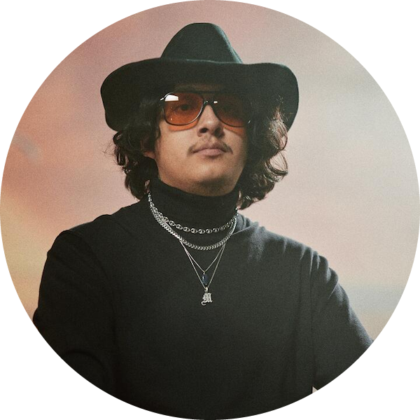

NF is honestly my favorite musician and my idol just because of what he does. He sings about how he feels and doesn’t let anybody stop him. Because life isn’t perfect and life is really hard, and he isn’t afraid to admit it or speak his mind about what he believes in. Also the beats for his rap music are just really really good.
ElyOtto honestly makes the textbook definition of hyperpop but does it in a way in which the pop part doesn’t annoy me, because I don’t like most pop music, but it’s nice to sit back with some good hyperpop without the pop element annoying me.

100 Gecs is a great hyperpop group, but they also make a lot of really weird genre bending music. Mixing everything from rock to country their music is really weird, but really good.
Confetti, the band made up of Conrad and Fetti, is the very definition of non-conformity. They make amazing music. They know they’re different and they make sure to never lose what makes them so great. If there’s one artist, I’d recommend to the average person it would be Confetti.
You probably already know AJR, I think everybody does, but if you don’t know the name, you’ll know their music as they’re the people behind The World’s Smallest Violin, Bang!, and Yes, I’m a Mess. I love how unique their music is, and they just have their own unique style that sounds great.
Cuco just makes really weird music in general. It’s really slow and generally electronic, but not how you would imagine normal electronic music. It’s really weird to describe, but it’s good. He has a few too many romance songs, but hey I listen to him for the beats not the lyrics. The reason I don’t listen to him for the lyrics is partially because quite a bit of them are in Spanish and I don’t know Spanish. Regardless, he makes good music.

Glorb makes rap with the cast from SpongeBob with amazing beats. That’s really it, nobody knows who Glorb really is.
Yeah, ok sure, he made the music for Minecraft, but I honestly prefer his work outside of Minecraft. You know when he made what he wanted to make, and it didn’t need to fit into or make sense in a video game and he got a lot better at making music as time progressed after he quit making Minecraft’s music.

He makes what I can only describe as neojazz. It’s really soft and honestly really good even though that’s not normally the type of music I like. He just finds a way to make it work. The sound is also unique in a great way.

This is probably one of NF’s most emotional albums and it’s the one that I’d recommend to people who haven’t listened to NF’s music to start with. I thought of including the album the album before this one on the list but honestly as NF has gotten better with more practice making this album far surpass the one before it, and I don’t want to list ever single NF album, but Perception is also a great album.

NF’s most experimental album and I love it because of that. NF’s music sounds more repetitive than other artists, so the change of pace is great, and I honestly think the album is really underrated.
NF’s new album and it’s pretty good. I’m glad that he seems like mentally he’s in a better which spot, so recently has produced a little happier music in this album which if never a bad thing, but it makes it different from other albums.

HELLSCAPE SUBURBIA is ElyOtto’s most hyperpopy album, so while other albums like Happy Together Convenience Store are good, they don’t have as much hyperpop, so I listen to HELLSCAPE SUBURBIA more.
10,000 gecs is newest album from 100 Gecs and it’s really good, seeing as it’s just standard them, but improved from their previous stuff because when you practice a skill, you get better at it.
AJR’s newest album and it’s pretty good. It’s pretty standard album from them so it’s pretty good and I don’t have too much to add here.

This might objectively be the best AJR album giving us bangers like Bang!, and World’s Smallest Violin. It is the one I listen to the least though just because since those two songs are way too overplayed so I don’t want to hear them as much, but the rest of the album is absolutely amazing.
Probably my mist listened to album just because The Maybe Man is new and OK ORCHESTRA has two really overplayed songs. Also look at the clouds on the album art. They look like cotton candy, and I want to eat them really badly. Anyways, great album overall.
Probbaly AJR’s most underrated album because it’s one of their oldest, but it still has some amazing music and is a must listen for any person that calls themselves and AJR fan.
Unlike their first album (which was still really good), Confetti really knew their style and how to lean into it, making it a great album.
Cuco’s newest album and by far his best. It really feels like the fantasy gateway when listening to it which feels like a really chill acid trip. I feel like the music video for Caution would describe the feeling the best, but yeah, overall great album.

C418’s latest solo project and it’s my favorite album by him. It’s very different from his Minecraft stuff with album being very eclectic, but still very C418.
LeGrand’s only album and it’s pretty good. With how much he’s improved with his recent singles I’ll be waiting for his next album because with how good this one was it has to be quite a bit better with how much he’s improved over the years.